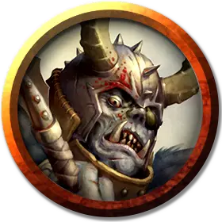

Орк око Груумша
Orc Eye of Gruumsh
Средний Гуманоид (Орк), хаотично-злой

Класс Доспеха 16 (колечный доспех, щит)
Хиты 45 (6к8 + 18)
Скорость 30 футов
| мод | спас | ||
|---|---|---|---|
| СИЛ | 16 | +3 | +3 |
| ЛОВ | 12 | +1 | +1 |
| ТЕЛ | 16 | +3 | +3 |
| мод | спас | ||
|---|---|---|---|
| ИНТ | 9 | −1 | −1 |
| МДР | 13 | +1 | +1 |
| ХАР | 12 | +1 | +1 |
Навыки Запугивание +3, Религия +1
Чувства тёмное зрение 60 футов, пассивное Восприятие 11
Языки Общий, Орочий
Опасность 2 (450 опыта)
Бонус мастерства +2
Среда обитания Арктика, Болото, Горы, Лес, Луг, Подземье, Холмы
Особенности
Агрессивный. Орк может бонусным действием переместиться на расстояние, не превышающее его скорость, в сторону видимого враждебного существа.
Ярость Груумша. Орк причиняет дополнительный урон 4 (1к8), когда попадает атакой оружием (уже учтено в атаках).
Использование заклинаний. Орк является заклинателем 3-го уровня. Его базовой характеристикой является Мудрость (Сл спасброска от заклинания 11, +3 к попаданию атаками заклинаниями). У него подготовлены следующие заклинания жреца:
• Заговоры (неограниченно): сопротивление [resistance], указание [guidance], чудотворство [thaumaturgy]
• 1 уровень (4 ячейки): благословение [bless], приказ [command]
• 2 уровень (2 ячейки): божественное оружие [spiritual weapon] (копьё), гадание [augury]
Действия
Копье. Рукопашная или дальнобойная атака оружием: +5 к попаданию, досягаемость 5 футов или дистанция 20/60 футов, одна цель. Попадание: Колющий урон 11 (1к6 + 3 плюс 1к8), или колющий урон 12 (2к8 + 3), если используется двумя руками для совершения рукопашной атаки.
Описание
Когда орк убивает эльфа во имя Груумша и преподносит ему тело врага как жертву, может появиться проявление бога. Он требует добавочной жертвы: один глаз орка, как символ потери Груумша от рук его великого врага Кореллона Ларетиана.
Если орк вырывает свой глаз, Груумш может одарить его способностью к заклинаниям и особой благосклонностью, также как и правом называть себя Оком Груумша. Этот дикий поборник бога резни даёт советы вождю предсказаниями, а в бою бросается первым, чтобы обагрить свое оружие кровью.
См. дополнительно статью: "Бестиарий: Орки"